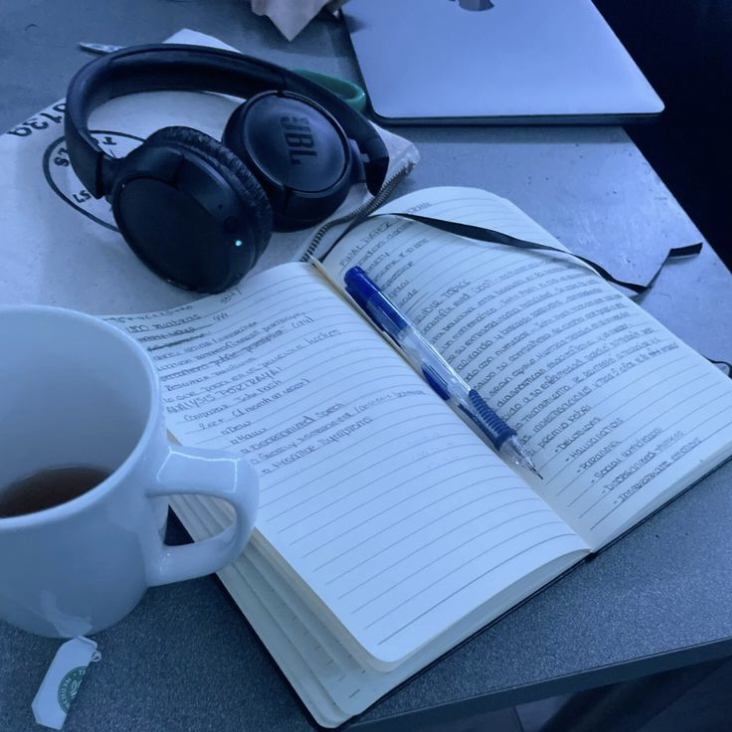
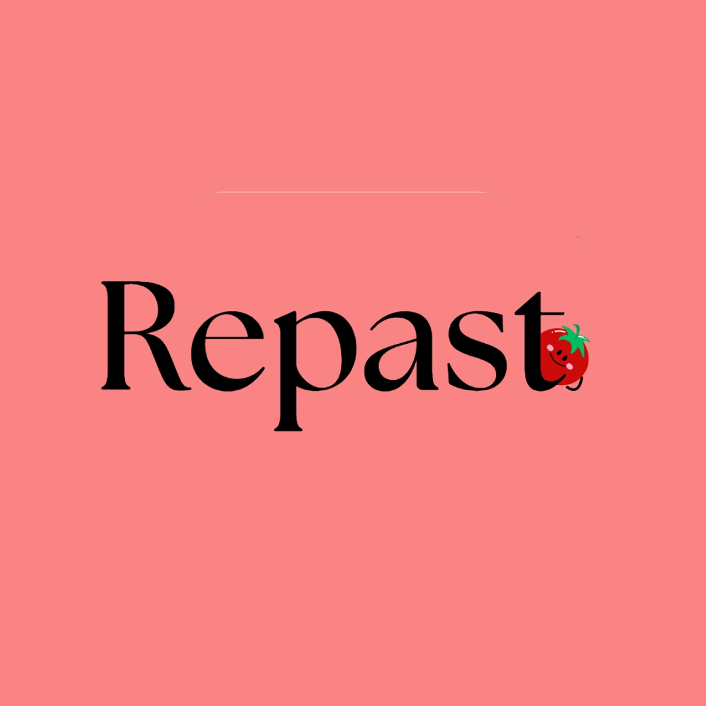
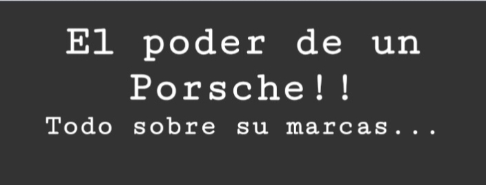

Hola soy Juan Pablo Poveda Rodriguez soy un estudiante de grado once del colegio Maria Currea Manrique que actualmente cursa el tecnico Programacion de Aplicaciones para Dispositivos Moviles en Senatic. Me gusta Aprender acerca de temas de tecnologia y programacion, medicina y temas variados. Me gusta liderar proyectos grandes y probar cosas nuevas. Actualmente estoy terminando mi ciclo escolar y estoy en busca de universidad para continuar mis estudios. Me gustan muchñs temas, de los que te invkto conocer mis favoritos.
Me gusta bastante la música y disfruto escuchar nuevos sonidos y descubrir diferentes estilos. Mis géneros favoritos son el reguetón, el trap y la música en inglés, aunque también suelo escuchar house de vez en cuando. Me gusta explorar nuevos artistas y experimentar con diferentes sonidos.
Me gusta probar diferentes videojuegos, conocer nuevas experiencias y explorar distintos estilos de juego. Además, me interesa mucho el desarrollo de videojuegos y todo lo que hay detrás de ellos, desde su creación hasta su funcionamiento y diseño.
Me gusta aprender sobre tecnología, especialmente sobre programación y desarrollo de software. Aunque no soy un experto, disfruto adquirir nuevos conocimientos, experimentar y descubrir lo que se puede crear mediante la tecnología. Me interesa principalmente el desarrollo de programas y aplicaciones, aunque también conozco algunos aspectos del hardware.
Me gusta aprender sobre diferentes temas, descubrir cosas nuevas y ampliar mis conocimientos. Disfruto explorar áreas que quizás no conozco y encontrar nuevos intereses que me permitan aprender y desarrollar diferentes habilidades.
La medicina es una de las áreas en las que más me interesaría desarrollarme profesionalmente. Siempre me ha llamado la atención el cuerpo humano, cómo funciona y la increíble complejidad de todos sus sistemas y mecanismos. Me parece impresionante todo lo que ocurre dentro de nuestro organismo.
Me gusta aprender sobre diferentes temas y adquirir nuevos conocimientos. Disfruto especialmente investigar y profundizar en aquellas áreas que despiertan mi interés y curiosidad. Considero que aprender constantemente es una buena forma de descubrir nuevas oportunidades, desarrollar habilidades y ampliar mi manera de ver el mundo.

Iconic es una empresa y proyecto grupal que fundé y actualmente lidero junto a otras personas. Nuestro objetivo es desarrollar ideas y proyectos tecnológicos que puedan aportar soluciones y generar un impacto positivo.
Actualmente trabajamos en Saber Style, una aplicación interactiva dirigida a estudiantes y educadores, que busca apoyar los procesos educativos, ofrecer herramientas de aprendizaje y facilitar el acceso a la educación para personas con dificultades visuales, además de brindar apoyo a las instituciones educativas.
Repast fue un proyecto que desarrollamos anteriormente y que actualmente se encuentra cancelado. Consistía en una aplicación enfocada en la cocina y la preparación de recetas, que integraba inteligencia artificial para recomendar recetas y ayudar a los usuarios a encontrar opciones según sus necesidades.
Aunque el proyecto ya no está activo, fue una experiencia que me permitió explorar nuevas ideas y conocer otras posibilidades de aplicación de la tecnología.

Durante mi proceso de aprendizaje he tenido la oportunidad de experimentar con diferentes proyectos de programación, principalmente como una forma de practicar, explorar ideas y mejorar mis habilidades.
Uno de ellos fue una pequeña página web dedicada a Porsche, en la que trabajé para aprender más sobre el desarrollo y diseño web. También he participado en la programación de Saber Style, aportando al desarrollo de esta aplicación.Estos proyectos representan parte de mi aprendizaje.
